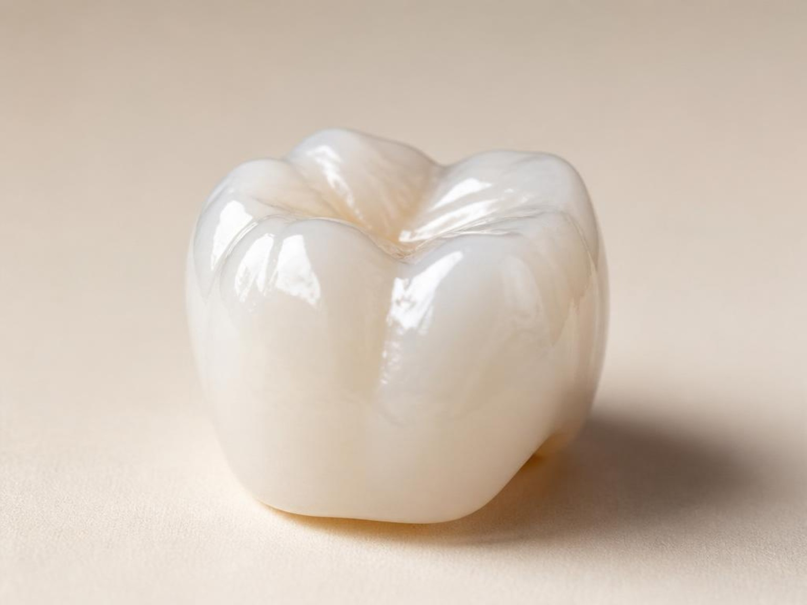
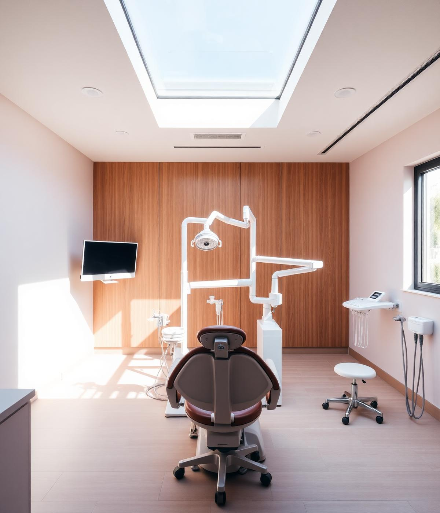
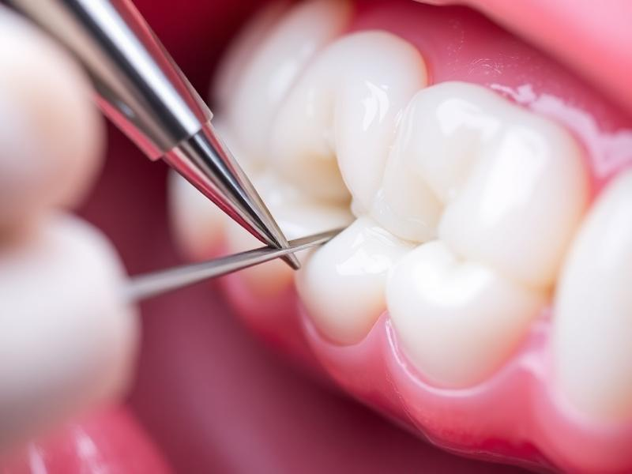
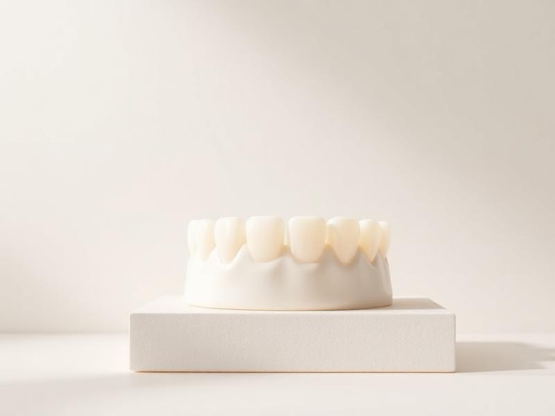

Próteses e Coroas
Substituição de elementos ausentes com cerâmicas puras que mimetizam a cor e a textura dos dentes naturais.
Excelência em saúde bucal
Dr. Luiz Roberto Craveiro Campos oferece próteses, restaurações estéticas e reabilitação oral com tecnologia de ponta e cuidado humanizado.

Materiais de última geração para garantir que sua restauração ou prótese seja imperceptível e duradoura.

Substituição de elementos ausentes com cerâmicas puras que mimetizam a cor e a textura dos dentes naturais.

Remoção de cáries e trocas de amálgama por resinas premium de alta resistência e polimento superior.

Transformação do sorriso com lâminas ultrafinas de porcelana para correção de forma e cor.
O profissional
Cirurgião-dentista dedicado à reabilitação oral e à odontologia estética, unindo técnica precisa e um atendimento acolhedor para devolver aos pacientes um sorriso saudável e natural.
Cada tratamento é planejado individualmente, respeitando a anatomia, o tempo e o conforto de quem confia seu sorriso ao consultório.
Dúvidas frequentes
Encontre respostas para as principais dúvidas sobre próteses, implantes, facetas, lentes de contato dental, clareamento e reabilitação oral.
A prótese dentária é um tratamento utilizado para substituir um ou mais dentes perdidos ou restaurar dentes comprometidos, devolvendo função mastigatória, estética e qualidade de vida.
Existem próteses fixas, removíveis e próteses sobre implantes. A indicação depende das condições bucais e das necessidades de cada paciente.
Pode ser indicada em casos de perda dentária, dentes muito comprometidos ou necessidade de recuperar a mastigação, a fala e a harmonia do sorriso.
Sim. Os materiais atuais permitem reproduzir cor, forma e textura de modo bastante semelhante aos dentes naturais.
A higiene diária, as consultas periódicas e o uso adequado da prótese ajudam a preservar o tratamento e a saúde bucal.
É uma estrutura de titânio instalada no osso para substituir a raiz de um dente perdido e servir de suporte para uma prótese.
Muitas pessoas podem receber implantes, desde que tenham condições clínicas adequadas. A indicação depende de avaliação individualizada.
Sim. É um tratamento consolidado na odontologia, com bons resultados quando realizado com planejamento, técnica adequada e acompanhamento.
Entre as vantagens estão estabilidade, conforto, segurança ao mastigar, preservação óssea e aparência natural.
O implante exige boa higiene bucal, acompanhamento periódico e cuidados semelhantes aos recomendados para os dentes naturais.
São lâminas confeccionadas sob medida para recobrir a parte frontal dos dentes e melhorar forma, cor e harmonia do sorriso.
As lentes costumam ser mais finas e indicadas para pequenas correções. As facetas podem atender situações que exigem mudanças mais significativas.
Cada caso é avaliado individualmente. Quando necessário, o preparo é realizado de forma conservadora, buscando preservar a estrutura dental.
Pacientes com indicação clínica e desejo de melhorar a estética do sorriso podem se beneficiar do tratamento após avaliação profissional.
Boa higiene, consultas periódicas e cuidados com hábitos que possam causar desgaste ajudam a preservar o tratamento.
São lâminas ultrafinas de porcelana utilizadas para corrigir pequenas imperfeições e tornar o sorriso mais harmonioso.
Podem ser indicadas para pequenas alterações de cor, formato, tamanho, espaçamento e outras imperfeições estéticas.
Sim. Quando planejadas de acordo com o rosto e a anatomia dental, podem proporcionar resultado delicado e natural.
Os cuidados são semelhantes aos indicados para os dentes naturais, com boa higiene e acompanhamento odontológico.
Manter boa higiene, evitar usar os dentes para abrir objetos e seguir as orientações profissionais ajudam a conservar o tratamento.
O clareamento utiliza agentes específicos que atuam sobre pigmentos responsáveis pelo escurecimento dos dentes.
Sim. Quando realizado com indicação e acompanhamento profissional, é um procedimento seguro e eficaz.
Algumas pessoas podem apresentar sensibilidade temporária, que pode ser controlada com orientação e protocolos adequados.
No consultório, a aplicação é realizada pelo profissional. No tratamento domiciliar supervisionado, o paciente utiliza moldeiras e produtos indicados pelo dentista.
Boa higiene, consultas preventivas e hábitos saudáveis ajudam a preservar a aparência do sorriso.
É um conjunto de tratamentos planejados para recuperar função, estética e saúde bucal de forma integrada.
Pessoas com perda dentária, desgaste, alterações na mordida ou necessidade de reconstrução do sorriso podem se beneficiar.
Implantes, próteses, restaurações, facetas, clareamento e outros procedimentos podem ser combinados conforme a necessidade.
O planejamento considera avaliação clínica, exames, registros fotográficos e as expectativas do paciente.
A reabilitação pode melhorar mastigação, conforto, função, estética e confiança ao sorrir.
Atendimento personalizado
Converse diretamente pelo WhatsApp e agende uma avaliação.
Localização
O consultório está localizado no Centro Empresarial Brasília, em uma área central e de fácil acesso no Distrito Federal.
Agende uma avaliação diagnóstica com o Dr. Luiz Roberto e descubra o melhor plano de tratamento para você.